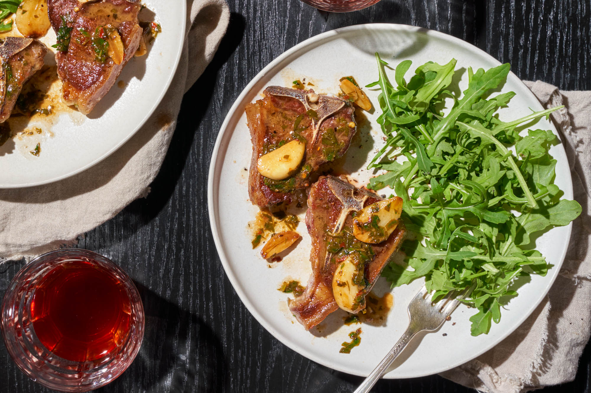

Lamb Chops Recipe
Home Page

Description
If you've never cooked lamb chops, you might be intimidated trying to figure out how to cook lamb chops. But don't be. This easy garlic lamb chop recipe comes together in under a half hour, complete with a pan sauce. The sizzled garlic cuts
through the richness of the lamb, and pairs perfectly with lemon and parsley in the sauce.
Ingredients
- 8 1/2-inch-thick lamb loin chops (about 2 pounds fatty tips trimmed)
- Salt and freshly ground pepper
- Dried thyme
- 3 Tablespoons extra-virgin olive oil
- 10 Small garlic cloves (halved)
- 3 Tablespoons water
- 2 Tablespoons fresh lemon juice
- 2 Tablespoons minced parsely
- Crushed red pepper
Steps
- Season the lamb with salt and pepper and sprinkle lightly with thyme.
- In a very large skillet, heat the olive oil until shimmering. Add the lamb chops and garlic and cook over moderately high heat until the chops are browned on the bottom, about 3 minutes.
- Turn the chops and garlic and cook until the chops are browned, about 2 minutes longer for medium meat. Transfer the chops to plates, leaving the garlic in the skillet.
- Add the water, lemon juice, parsley and crushed red pepper to the pan and cook, scraping up any browned bits stuck to the bottom, until sizzling, about 1 minute.
- Pour the garlic and pan sauce over the lamb chops and serve immediately.